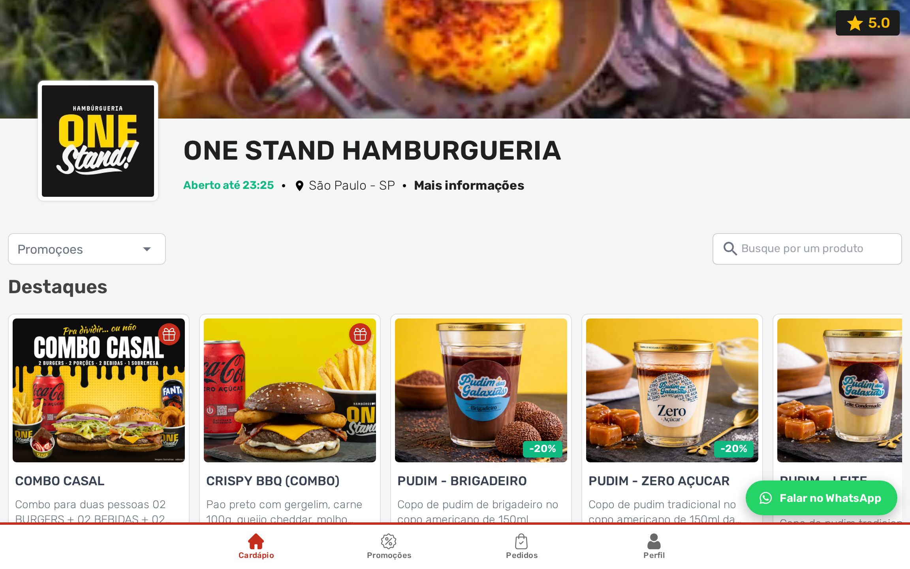

<!-- Slide 5: EM QUAIS TELAS, e e aqui que a peca responde a objecao que sobra —
     "isso nao vai atrapalhar quem esta pedindo?". A resposta e a imagem: no
     computador o botao fica na quina, por cima de um cardapio que continua
     inteiro.

     O APARELHO E O NOTEBOOK, e nao a janela de navegador, porque o que o slide
     mostra nao e a pagina: e a cena de alguem sentado olhando o cardapio da loja
     no computador. A janela mostra a pagina; o notebook mostra quem esta do
     outro lado. A captura e de 1152x720, que e 16/10 — a proporcao da tela do
     mockup, para o `object-fit: cover` nao comer faixa nenhuma.

     Nenhuma barra de sacola nesta peca. A tomada `cel-sacola-cheia` provou que o
     botao SOBE 50 px quando ha item na sacola (de y=732 para y=682, as folgas de
     16/68 e 16/118 que o bundle usa), e nao entrou na arte porque a barra de
     "Ver sacola" daquele cardapio fica ATRAS da barra de navegacao: a captura
     mostra o botao mais alto e nao mostra o motivo. Slide cujo titulo o leitor
     nao consegue conferir na imagem nao entra. -->
<div class="slide">
  <div class="topo">
    <span class="logo"></span>
    <span class="contador">5 de 6</span>
  </div>

  <div class="pilha g24" style="margin-top: 26px; max-width: 920px">
    <span class="chapeu">Em quais telas</span>
    <h2 class="titulo titulo--pequeno">
      O botão de WhatsApp também abre no <span class="destaque">computador</span>
    </h2>
    <p class="corpo">
      Celular e tablet, computador ou os dois: você escolhe em quais telas o botão
      aparece.
    </p>
  </div>

  <div class="figura" style="margin-top: 48px">
    <div class="notebook" style="width: 860px">
      <div class="notebook__tela">
        
      </div>
      <!-- O anel não é enfeite aqui. Na tela do computador a pílula tem 149 px
           de 1152, e reduzida para a moldura ela fica com 112 px de slide — o
           bastante para ser conferida em tamanho real e pouco para sobreviver à
           miniatura do feed, que é onde o leitor decide se arrasta. A caixa saiu
           do medidas.json (x 944..1136, y 608..652 de 1152x720), convertida em
           porcentagem do `.notebook`, que é a caixa em que o anel é absoluto. -->
      <span class="realce" style="left: 79.6%; top: 80.9%; width: 20%;
                                  height: 10.4%"></span>
      <div class="notebook__base"></div>
    </div>
  </div>

  <div class="empurra"></div>

  <div class="rodape">
    <span class="pontos"><span></span><span></span><span></span><span></span><span class="on"></span><span></span></span>
    <span class="arraste">arraste</span>
  </div>
</div>
